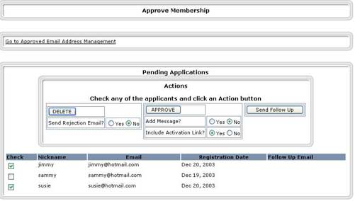
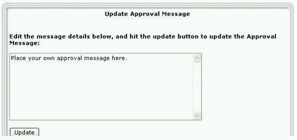
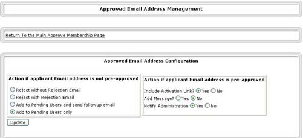
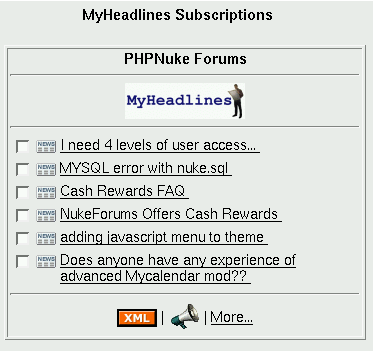

8.3. Add-on modules
In this section we present some interesting add-on modules for PHP-Nuke:
Daily Comic (Section 8.3.1),
Event Calendar (Section 8.3.2),
Your Account Tweak (Section 8.3.3),
Approve Membership (Section 8.3.4),
Gallery (Section 8.3.5),
IP Tracking (Section 8.3.6),
Protector (Section 8.3.7),
Web Cam (Section 8.3.8),
My Headlines (Section 8.3.9),
PHP-Nuke Tools (Section 8.3.10),
Upload (Section 8.3.11),
Upload add-on for phpBB (Section 8.3.12),
ODP (Section 8.3.13),
eCommerce (Section 8.3.14),
WorkBoard (Section 8.3.15).
8.3.1. Daily Comic module
In contrast to the UserFriendly block (Section 8.2.3), which shows only one cartoon, the Daily Comic module will show a whole series of different daily comics from various authors. However, instead of getting the images from the original web pages, it requests them from some third party web page. This way, the mechanics of achieving this result remain hidden to you - which is not very good from the educational point of view, even though the result is very pleasing. See it in action in Coding Network: Daily Comic module. Please read the admonition on copyright in Section 8.2.3, before you decide to use this module!
8.3.2. Event calendar
Based on version 1.5 by Rob Sutton, the Event Calendar (Figure 8-8) found in http://phpnuke.holbrookau.net is much updated and features many improvements and add- ons. For example, the adminstration area features configuration via a graphical interface, posting of events can be mode rated and users even have the option of adding comments to any event.

For the installation, it is assumed that the user has some knowledge of MySQL and is comfortable with running simple queries before starting. It is highly recommended that you have phpMyAdmin (see Section 3.4) installed on your server - it will simplify installation and help with error tracking.

Add new Block(s) using one or more of the 5 available calendar block types:
Calendar1 (Figure 8-9) shows only events for that day.
Calendar2 (Figure 8-10) is a month calendar with a daily events list.
Calendar3 (Figure 8-11) scrolls a list of coming events.
Calendar4 (Figure 8-12) is the monthly calendar with links and day/month view selection.
Calendar5 (Figure 8-13) is an enhanced ( next 10 events) version of the scrolling calendar block.

For installation instructions, read the readme.txt file that comes in the docs folder of the unzipped eventcal-xxx.zip file.
8.3.3. NSN Your Account Tweak module
A module that allows the administrator to apply a fine-grained control over user management is NSN Your Account Tweak 650 3.0.2. According to the description, it offers the following features (Figure 8-14):
Provides for servers without mail support.
Optionally send the admin an email when someone unregisters.
Optionally send the admin an email when someone registers.
Admins can allow user self deletion.
Admins can block user theme changes.
Admins can block user email changes.
Blocks usernames with preset strings in them.
Allows for Required User approval by Admin.
Admins can suspend users.
Users can be promoted to Admins by SuperUser ONLY.
Admins can resend Activation Email.
Admins can choose to bypass email activation.
Admins can now view pending user details.
Admins can now modify pending user details.
Improved NavBar scripting.
Figure 8-14. Extra options for user management in the NSN Your Account Tweak module.

Extra options for user management in the NSN Your Account Tweak module.
 | Download the right NSN Your Account Tweak version! |
|---|---|
Be careful with the version you download from this module! The number 650, for example, indicates that it is only for PHP-Nuke 6.5. Use only the version that is in accordance with your installed PHP-Nuke version, otherwise you are guaranteed to mess up your installation completely. |
8.3.4. Approve Membership module
Figure 8-15. Pending applications in the Approve Membership module.

Pending applications in the Approve Membership module.
The Approve Membership module allows an administrator to approve membership applications. The applicant's details are sent to a pending users table and a notification email is sent to the administrator. A list of pending applicants is displayed to the administrator, who can delete or approve as he thinks fit (see Figure 8-15). On approval, the normal email is sent to the applicant with the activation link. The following options are available:
Add a customisable message to this email (see Figure 8-16).
Send a follow up email to an applicant.
Send an email to a rejected applicant.
All emails are customizable.
Figure 8-16. Approval message in the Approve Membership module.

Approval message in the Approve Membership module.
See also Authorize accounts for an in-depth discussion.
The new version 3.0 of the Approve Membership module for PHP-Nuke 6.9 offers even more facilities, such as:
The option to include the activation link or not.
The option to semi-automate the approval process. With this option, the admin can pre-approve known email addresses (from student lists, club members, family and friends etc), see Figure 8-17, Figure 8-18.
If an applicant is on the pre-approved list, his application is automatically approved without the intervention of admin
If an applicant is not on the approved list, there are various configurations for dealing with the application.
The automated process is configurable from the administration panel (Chapter 7).
Figure 8-17. E-mail management in the Approve Membership module, part I.

E-mail management in the Approve Membership module, part I.
Figure 8-18. E-mail management in the Approve Membership module, part II.

E-mail management in the Approve Membership module, part II.
If you want users to be registered directly, without confirmation mails, see Section 18.6.5 or the New User Auto Activation Hack and the Auto Registration Activation For Nuke v7.0. If you want to disable registration, see Section 18.6.4.
8.3.5. Gallery module
The Gallery module from Nuked Gallery is the “nuked” version of the standalone Gallery package. Gallery comes with a handy web based configuration wizard. This wizard helps to make sure that your web server and operating system are set up correctly. It allows you to configure many of Gallery's options while determining as much as it can from your environment. The wizard will create an administrator account for you. This is a special account that allows you to create other user accounts, create albums, and set album permissions.

A photo or movie is the basic unit of Gallery. Photos and movies are grouped together into albums (Figure 8-19). Once you have the photos in your album, the fun begins. Typically an intermediate resized version and a thumbnail of the image are created for you. You can:
Add captions
Edit the thumbnail. Gallery comes with a small Java applet that lets you select a part of the image as the source for your thumbnail.
Rotate your photo (in 90 degree increments)
Highlight a photo (pick a photo to represent the album in the main Gallery)
Reorder the photos in the album
Hide photos (so that they're only visible to the owner)
Delete photos
Sort your album based on popularity, title, number of comments, and photo capture date.
Edit multiple captions at once
To download the Gallery module, go to Nuked Gallery, find the “Related files” block (Figure 8-20) and click on the link with the most recent stable version. Other Gallery related resources are
8.3.6. IP Tracking module
To track your visitors' IP address, you can use the IP tracking module. Get it at the Downloads section of ierealtor. After installation and activation of the module, a click on the “IP Tracking” link in the Modules block will display the “IP Tracking Info”, a list of IP addresses that accessed the site (Figure 8-21). You can order the list by ascending or descending order of its column fields, by clicking on the respective up- and down-arrows.
 | Lazy man's Logfile Inspection |
|---|---|
Nothing beats regular inspection of the real web server logfiles - but if you are lazy, you want a quick info of what is going on, or you cannot do otherwise, the IP Tracking module will give you a quick solution to your logfile inspection problem. In the Page View Info (Figure 8-22), be attentive to URL parameters that pass Javascript code or SQL queries to the database - they are a clear indication of cross-scripting (Section 23.3.1) and SQL injection (Section 23.3.2) attempts at your site respectively. |
The IP addresses themeselves are links to a detailed view, the “Page View Info” (Figure 8-22). It lists the pages that were requested by that IP address. Again, you can order the list by name or date using the arrows on the table header. Note: administrators won't appear online since they are not entered in the nuke_session table.
| Code corrections necessary for PHP-Nuke v. 6.0 and/or old PHP versions! | ||||||||||||
|---|---|---|---|---|---|---|---|---|---|---|---|---|---|
If you get the error:
then you are using an old PHP version that does not understand the _SERVER superglobal. Edit the index.php file of the module and change:
to:
You also have to edit iptracking.php. Change:
to:
and
to:
and
to:
If you are getting MySQL errors like the one of Section 3.9.2, complaining about non-valid MySQL result resources, then you are probably using an old PHP-Nuke version (like 6.0, for example) that uses the field “username”, instead of “uname” in the nuke_session table. In this case you have to change “uname” to “username” in the two WHERE clauses of the index.php file of the module. Change:
to:
and
to:
|
If your main motivation for using the IP tracking module is to be able to ban certain annoying visitors from certain IPs, check also the Protector module (Section 8.3.7) for a ready-made, full-featured solution to IP banning, as well as Section 23.5 for a quick, do-it-yourself hack.
8.3.7. Protector module
The Protector System gives you "high level" logs of session activity on your PHP-Nuke site. But not only this - it can be effectively used to ban IP addresses and users:
Possibility to add a single IP or a whole range.
Logging of ALL IP(s) that hit your PHP-Nuke site.
If a member joins the site the logger fetches the username and stores it with their IP. (Otherwise the IP gets the username Anonymous)
If a member IP changes the new IP will be stored with their username
Logging of the real IP not just the proxy IP if that is the case.
Search function (with wildcards *) after the logged IP and user name. And sort order.
Protection of your IP is done when you first install this system. That means that no one can ban that IP.
As head admin (GOD) you can add several protected IP(s) in the Admin Panel. All other admins just see personal settings where they can change total amount of row they want to display in the banned & locate IP panels.
Automaticallyupdate the date of a logged IP so that you can see when a particular IP or user was on your site.
You can dns/trace/ping and more after you query the IP with the query tool that I have implemented.
It is totally themes integrated system.
Security check so that you can't ban yourself (the IP you currently use when your in the admin panel) or protected IP.
Double check so that there is no banning or logging of the same information twice.
If a banned member is banned and they change their IP. The system will check the banned database and compare if the username(s) match. If it does a new row with the new IP and same username is added in the ban list. So they are banned again automatically with the new IP.
Counts on how many times a banned user is trying to reach the site.
Possibility to instantly ban people from your list with logged IP.
You can of course un-ban IP numbers.
Very simple to install, The Ban System will create all needed tables for the MySQL Database on the first run.
As Forum admin can you reach the Edit User Function from the "Locate Panel". Also, a direct link to the public user information is there.
In the Locate panel there are 4 different images close to the IP number.
A Green dot indicates that the IP is just logged.
A Red dot indicates that IP is banned.
A Star indicates that this IP number is the IP you are currently using.
A blinking computer gif indicates if that logged user/IP is online.
A small stat page where you can see some stats on the Ban Protector System.
Anti hammering protection system.
Special Notes to each logged IP is possible.
Close the site function. Only admins are able to be on the site when active.
When a user attempts to access the admin page a note is added to their IP to warn you of potential hackers.
An auto pruning system to prune logged IP addresses set from the maintenance panel.
Grant access to the Ban System for your (admin) users who are not a "super user".
Auto Protect your IP if you logon using another pc with your user name and the old IP will be replaced with the new one until you logon again then your IP will be replaced again.
Optimize and repair the tables in the Protector System to reclaim the unused space and to de-fragment the data file or if you get errors.
8.3.8. WebCam module
If you are looking for a webcam module, have a look at the camPortal. See it in action at The Sceptics Hour. camPortal's highlights include:
Advanced Admin panel
Static or Dynamic webcam image in block (optional, see Figure 8-23)
Categories
Vote system (Figure 8-24)
Comment system
Hit counter
Users can report broken cams
Users can submit their cams
Languages included: English, Spanish, Dutch, German.

You must have at least PHP-Nuke 6.5 and a newer PHP version (one that understands the _SERVER superglobal, for example) to use this module. The installation instructions are a bit outdated. In some parts, for example, they talk about “webcam”, when atually it should say “camPortal” - but with knowledge of the structure of a PHP-Nuke module (see Section 21.1) you will figure it out. 
To grab the images from your webcam, you can use ConquerCam. ConquerCam is a low-priced (only $10 USD), easy to use webcam manager for grabbing images from your web cam under Windows, preparing them with various effects and uploading them to your web site (where you can use camPortal to display them in PHP-Nuke). Using ConquerCam you are able to setup your computer as a security system as well, using the advanced motion detection and mail-notification system included.
Figure 8-25. ConquerCam: main window with the Options dialog opened up.

ConquerCam: main window with the Options dialog opened up.
ConquerCam can be customized in a variety of ways, e.g. by selecting how often you want to grab and upload images, which overlay effects you want to use (many of the well-known Adobe PhotoShop effects are available, such as Multiply or Darken) and unlimited numbers of textual captions to put on your grabbed image using a bunch of tags. Tags are replaced by dynamic data such as current date/time, WinAMP title currently playing or the Swatch Internet Time.
8.3.9. My Headlines module
Figure 8-26. MyHeadlines Box containing syndicated content.

MyHeadlines Box containing syndicated content.
MyHeadlines is a personalized syndicated content module. As a user you may subscribe to many news/content sources from the MyHeadlines database. For each of your subscriptions this site will gather the latest headlines/stories/content from the source and present a consolidated view of all of your interests in one location. The MyHeadlines engine allows you to configure the layout of this page to suit your needs; It will allow you to place the "Boxes" containing the syndicated content (Figure 8-26) in any one of three possible places (Left, Right or Middle) on two rows (Top and Bottom) of the module's space on the front page.
There are over 1000 sources in the MyHeadlines database: from special interest groups, to regional news, to technology sites, to company/corporation specific news, and more. You can subscribe to the content you want. As an added bonus, MyHeadlines now sports a Stock Ticker "Box" that will allow you to watch your favourite Index, Stock, Bond, etc.
Download it from the Downloads section of jmagar.com. See also the MyHeadlines FAQ. See it in action at jmagar and weenor.
8.3.10. PHP-Nuke-Tools module
The PHP-Nuke Tools module is one of the most helpful modules. Whether you are developing for PHP-Nuke or want to write a module or block really quickly, or even if you just want to learn how modules, blocks and the rest works in PHP-Nuke, you will appreciate its help.. It offers features such as:
Module Creator (see Figure 8-29),
Block Creator,
Help for Module Creator,
Help for Block Creator,
HTML to PHP,
HTML to ASP,
HTML to JSP,
HTML to Perl,
HTML to JavaScript,
Online HTML Editor,
Meta Tag Creator,
Scrollbar Creator,
Popup Creator,
Hex Colors
and many others. It comes with an extra block containing links to all functions (Figure 8-28). See it in action at disipal.net.
| Especially recommended for beginners (but not only)! |
|---|---|
You are a beginner in PHP(-Nuke), have just started your very first module or block, but you get errors and don't understand why? Give it a try with the PHP-Nuke Tools Module or Block Creator! It will help you see what you were missing and will also give you a feeling of how code looks before and after it is "nuked".
|
For a much more ambitious project on automatic building of PHP-Nuke blocks and modules (towards a web-based integrated programming environment, IDE, for PHP-Nuke) ckeck Raven's Block Builder. It is currently under development, but very promising.
8.3.11. Upload module

The PHP-Nuke Upload module facilitates upload functionality for PHP-Nuke and has the following features:
Upload to virtual folders
Download the files from these folders
List files in these folders
Possibly add a comment to each file
Use the same filename several times in one folder
Each file is owned by one registered user.
Each directory is owned by one registered user.
Only the adminstrator can create new folders and assign them to a registered user
The adminstrator can change the ownership a existing file or folder
The owner of a file can change the permissions on the file
When uploading to a folder, the uploader (only registered users are allowed to upload files) may choose the initial permissions on the new file.
The following permissions exist for owner and registered users: no permission, read permission, read/write permission. Also a flag is available, that allows direct download access for anonymous users (but nothing more)
Full group membership access: Each registered user can be a member of multiple groups, and each file can belong to one group, which allows no/read/read+write access (configurable for each file)
Multiple Language support
Most links may also include images, to give the module a pretty layout.
Size display for each file
Download counter for each file
Quota support based on group, user and folder quotas.
Optional thumbnail support for .jpg and .gif files based on the original files (so this is only a pseudo thumbnail at the moment).
 | PHP-Nuke versions greater than 6.5 and the Upload module | ||
|---|---|---|---|
If you are using a version of PHP-Nuke greater than 6.5, you must do a minimal, but crucial, change in the index.php file of the Upload file. Otherwise, the SQL queries will use the wrong field (uid, instead of user_id) for the user in the nuke_users table, leading to errors. Find the line
and change it to:
This will make sure that the right field names are used for all versions greater or equal to 6.5, not only for the 6.5 version.
|
8.3.12. Upload add-on for phpBB
If you are interested in an Upload add-on for your phpBB Forums, then you can check Photo Album Addon. This is a phpBB-based photo album/gallery management system. It is really powerful, stable, efficient, rich in features and highly customizable. The version 2 was written from the scratch for more security, performance, etc. It is not really a modification or hack, it is rather a phpBB-based system. 
Features:
Fully integrated with phpBB2 backend (DB, session, template, multi languages, etc.)
Powerful and handy Admin Control Panel
Auto-generated thumbnail s(requires GD)
Manual-uploaded thumbnails (for those who don't have the GD library[1])
Thumbnail cache (for better performance)
Multi-categories
Powerful and phpBB-like permissions system
Moderator Control Panel
Upload Quotas
Pictures Description
Recent pics
Personal galleries (for member-oriented boards)
Rate system
Comment system
Hot link prevention (can set allowed domains[2])
Auto-optimization for different GD versions
Pic view counter
Admin/Moderator pic approval
Probably uploadable in PHP Safe Mode
 | May not work with every PHP-Nuke version! |
|---|---|
The Photo Album is an add-on for the standalone phpBB Forums. It has been ported to PHP-Nuke with the Album module (see the Admin Panel Downloads Category of portedmods). This module was only tested with PHP-Nuke 6.5RC2 with phpbb module 2.1 and does not work on a site with the 2.0.6b version of the phpBB module! |
For yet another file attachment add-on to the PHP-Nuke phpBB Forums, see the “Attachment Mod” from the PHP-Nuke 6.5 / Ported Mods / Extra Downloads section of portedmods. See File Attachment Mod v2.3.6 for phpnuke6 with 2.06 for a complete list of its features. For a discussion thread on Upload modules, see I cant find this Upload module.
8.3.13. ODP module
The ODP module displays the popular Open Directory inside your PHP-Nuke site (Figure 8-31). It is based on the phpodp class. The whole functionality is encapsulated in the phpodp class in odp.php. The PHP-Nuke module practically only calls the odp.php script.
If you would like to import all links of an ODP category into your Web Links or Downloads module, have a look in Section 27.5 and Section 27.6 respectively for some interesting procedures.
8.3.14. eCommerce module
There is certainly a lot going on currently in the area of eCommerce and PHP-Nuke. However, a ready-to-use PHP-Nuke port of the well-known osCommerce has yet to hit the streets. Keep an eye on the following promising links:
osc2Nuke: The international project of merging osCommerce and PHP-Nuke. With links to national projects worldwide.
Multishop: “We depart from the CMS PhpNuke and osCommerce to realize a virtual mall, a central portal where different shop, with all the funcionalities of a traditional eCommerce site (customer accounts,address book for different shipping,Order history,..),converge”, the developers say.
OSCommerce gets a Nuke-Module: a new SourceForge-Projects starts now!

For the moment, you could try CallowaysCart, a shopping cart recently released under the GPL and especially designed for PHP-Nuke (all versions) and Paypal's payment service (Figure 8-32).
A commercial (but with $35 USD certainly not expensive) eCommerce solution for PHP-Nuke is Emporium. The following is an incomplete list of its features, but bear in mind that, since Emporium is under active and rapid development, it will be outdated by the time you read this:
Unlimited Products.
Unlimited Categories.
Unlimited Brands to associate Products with Modularized Payment/Shipping methods.
Unlimited currencies.
Automated currency conversions (using Yahoo, XE, Oanda services).
Unlimited Product Options for Products (radio, dropdown, multidropdown, checkbox, textfield, textarea, inclusive [hidden], etc).
Unlimited Product Media for Products.
Tax classing (unlimited class types, associated with particular products... assign certain locations [states, countries] to tax classing with different tax structures).
Instead of relying on a feature list, a better idea might be to test Emporium: you can go to the Emporium demo site ([admin: demo, pass: demo]), and have full access to Emporium and all of its features.
8.3.15. WorkBoard Module
WorkBoard is a PHP-Nuke module for Project Management, distributed under the GNU General Public Licence.
To install WorkBoard,
Extract the archive and upload all files from directory 'html' to your root PHP-Nuke directory.
Insert sql/workboard.sql into your database, or
Copy 'wb_install.php' from directory 'installation' into your root PHP-Nuke directory, and then run script from your browser. Follow the instructions presented to you.
Once installed, a click on the WorkBoard icon in the administration panel (Figure 8-33) leads to the WorkBoard administration panel (Figure 8-34). There, you can set up
Projects and project positions.
Tasks and task statuses and priorities.
Project members

The WorkBoard module is still under rapid development.